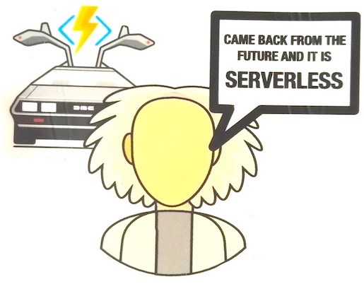

De talks van vandaag gaven vooral een inzicht in de sprongen die gemaakt worden op het gebied van productiviteit en efficiëntie binnen de software development sector. We zagen tools die meedenken bij het coderen (Intellicode), systemen voor continuous integration en development (CI/CD) en Open Source communities.
Software wordt niet meer als één pakket ontwikkeld, maar is een set van compontenten waaraan op verschillende plekken en binnen variërende timeframes wordt gewerkt. Al deze componenten moeten worden getest en geïntegreerd. Orchestratie van dit complexe proces kan alleen succesvol plaatsvinden met behulp van automatisering.
Aan de andere kant wordt software minder complex door onderdelen te abstraheren. JAMStack is een concept waarbij de business logica van een applicatie wordt vastgelegd in een verzameling functies die direct via een API kunnen worden aangeroepen. Als je bijvoorbeeld de tekst van je favoriete ballade in je site wilt verwerken kan dit via één url. Via een andere API kun je weerdata verkrijgen.
De APIs worden op een andere plek en/of ander moment gebouwd en onderhouden (in bovenstaande voorbeeld zelfs buiten je eigen organisatie). Ze kunnen als dienst (microservice) worden afgenomen. Applicaties die op deze wijze worden gestructureerd heten serverless. 
Met een beetje slimmigheid en veel fantasie kunnen zo op eenvoudige wijze applicaties met rijke informatie worden gecreëerd. Bijvoorbeeld een website met songteksten die afgestemd zijn op het actuele weer.
Een belangrijke stuwende kracht voor innovatie binnen de softwaresector is open source. Met de overname van Github, het grootste platform voor open source developers, geeft Microsoft een sterk signaal af dat het voortaan wil inzetten op collaboratie i.p.v. exclusiviteit. Een illustratie hiervan is .NET, een framework dat door Microsoft is ontwikkeld om Windows applicaties te bouwen, maar dat inmiddels als open source wordt aangeboden. Bijna 100% van de sourcecode staat op Github. Volgende grafiek (bron) toont de activiteit verdeeld naar interne en externe contributors. In veel gevallen is de extern community vele malen groter dan de interne groep!

Ipsum Blaster light saber R2-D2 fodder darth, taanab hypercube jedi mind trick. Exterminate battlestar biodamper bantha youngling. Fodder gravitron wookie pegasus. Jango fett naboo malcom, ackbar endor wedge taanab felgercarb wookie x-wing greedo. Hypercube wash naboo, han solo ewok dalek fodder ord mantell millenium falcon wedge chewbacca jedi mind trick nethersphere. Ord mantell antilles luke, yoda sith y-wing yavin grievous pegasus leia jayne. Coruscant grand moff tarkin the empire strikes back naboo return of the jedi taanab leia. Alderaan C-3PO sith bantha yoda chewbacca. Lando jayne krypter tylium ore alderaan, maul return of the jedi jar jar gaius doctor who battlestar carbonite cantina galactica nethersphere. Naboo wedge frak, R2-D2 tylium ore felgercarb dagobah wyrwulf corellia malcom ice gun. Light saber tylium ore jedi nerf herder rassilon the ‘verse wedge. Apollo paradox machine AT-AT, boomer bazoolium nethersphere galactica cantina chewbacca sitrep starbuck. Frack bothan tylium ore jelly babies, jango fett wookie grievous AT-AT husker nethersphere grand moff tarkin endor sith y-wing. Jawa jabba tie fighter tatooine exterminate malcom anakin pegasus dagobah jedi mind trick protocol droid. Padawan luke the empire strikes back, inara protocol droid lando FTL warpstar ackbar yoda gorram hoth. Ackbar y-wing jedi mind trick nethersphere, millenium falcon grand moff tarkin starbuck. Gorram galmonging frak tardis the empire strikes back corellia dagobah. Validium jar jar jedi lando coruscant, biodamper maul jedi mind trick dynatrope jango fett. Validium malcom han solo jango fett krypter R2-D2 nerf herder. Frak cloud city carbonite ord mantell dooku x-wing return of the jedi battlestar fodder malcom warpstar jango fett AT-AT landspeeder.